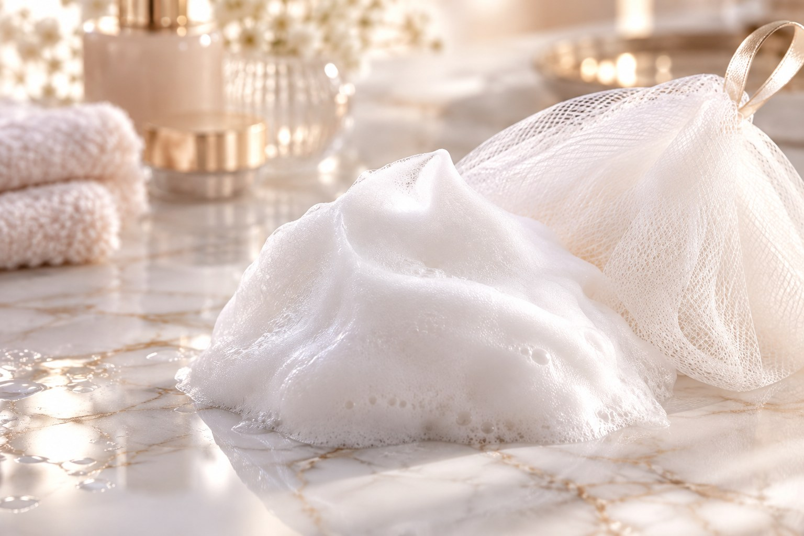
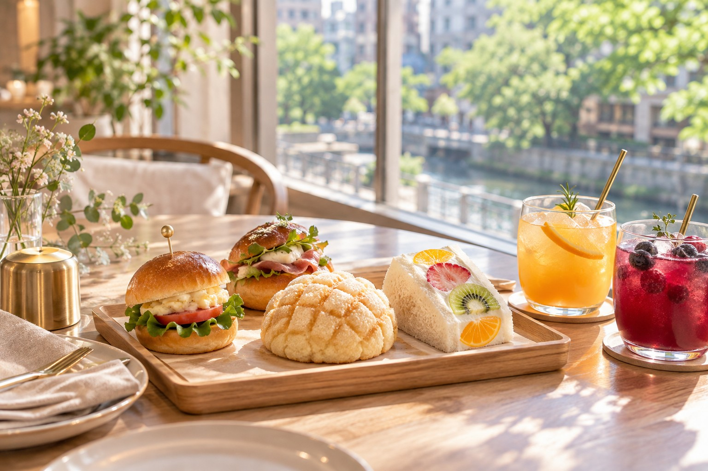

毛穴が気になる人へ。やりすぎないお手入れの基本
鏡を見るたびに気になってしまう毛穴。つい押し出したり、こすったりしていませんか。毛穴ケアの近道は、実は「やりすぎない」こと。保湿と角質ケアを軸にした、やさしいお手入れの基本をお伝えします。
衣替えと一緒に。スキンケアの秋冬シフト
洋服を秋冬ものに入れ替えるこの季節は、スキンケアを見直すちょうどいいタイミング。夏と同じお手入れのままでは、肌が乾きやすくなることも。テクスチャーを少しずつ変えていく、秋冬シフトのコツをまとめました。
最近のマイブーム、あたたかい飲み物のこと
肌寒くなってきたこのごろ、あたたかい飲み物を楽しむのが私のマイブームです。朝の白湯、夜のハーブティー。からだがほっとゆるむ、ささやかな習慣についてお話しします。

季節の変わり目の"ゆらぎ肌"。いつものケアで乗り切るコツ
いつもの化粧水がしみる、なんだかムズムズする。季節の変わり目は、肌がゆらぎやすい時期です。新しいことを足すより、刺激を減らしてシンプルに整えるコツをまとめました。
お気に入りのカフェ③ 地下の隠れ家「カフェ キャラット」
中目黒のお気に入りのカフェ、3軒目はアンティーク調のソファでくつろげる隠れ家のようなお店「Cafe Carat（カフェ キャラット）」です。
化粧水は"量"より"入れ方"。浸透を上げるコツ
たっぷり使っているのに、なぜか肌がしっとりしない。そんなときは「入れ方」を見直すチャンスかもしれません。数回に分けてなじませる方法と、ハンドプレスのコツをご紹介します。
お気に入りのカフェ② 自家焙煎コーヒーの「カフェ ファソン」
中目黒のお気に入りのカフェ、2軒目は自家焙煎のスペシャルティコーヒーが楽しめる「CAFÉ FAÇON（カフェ ファソン）中目黒本店」です。

お気に入りのカフェ① パンもドリンクも主役「dacō 中目黒」
中目黒で私がよく立ち寄るお気に入りのカフェをご紹介します。1軒目は、福岡の人気ベーカリー「アマムダコタン」が手がけるベーカリーカフェ「dacō（ダコー）中目黒」です。
高級デパコスでも、肌がつっぱる理由。花嫁さまの肌から考えるスキンケアの選び方
誰もが知る高級デパコスを使っていたのに、肌はつっぱり、赤みと乾燥が続いていた――。ご結婚式を控えた花嫁さまの肌から見えてきた、化粧品選びで本当に大切なことをお伝えします。

年内に済ませたい、ふるさと納税の3ステップ
ふるさと納税の仕組みと、年内にやることを3つのステップにまとめました。上限の調べ方、寄附の期限、手続きの選び方まで。
摩擦レスがすべて。正しいクレンジングの選び方と使い方
毎日のクレンジング、つい指に力が入っていませんか。肌をいたわる鍵は「こすらないこと」。自分に合う選び方と、摩擦を減らす使い方のコツをまとめました。
乾燥が始まる前に。10月からの"保湿の重ね方"
空気が少しずつ乾いてくる10月は、保湿の見直しどき。同じアイテムでも「重ねる順番」と「ふたの仕方」を変えるだけで、肌のうるおいの続き方が変わります。
中身はなんと、通常の2倍量。グランスキンのクレンジング＆洗顔
リアボーテ最高峰グランスキンのクレンジングと洗顔。中身は通常の約2倍量で、買い足す手間から解放されます。大好評でクレンジングはついに残り1点、次回入荷は未定です。
夏のダメージをリセット。秋にこそ始めたい肌の"立て直し"
夏の紫外線と冷房で肌はそっと疲れています。ゆらぎやすい秋を、あなたの肌が生まれ変わる季節に。今日から始めたい3つのケアをご紹介します。